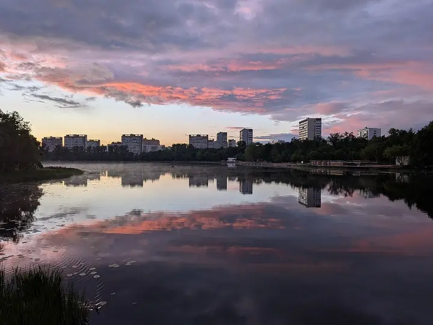

Фото: Lapovod, CC BY 4.0 · Wikimedia Commons
Усадьба с неоготическими башнями · САО
Усадьба Михалково
Усадьба XVIII века у Головинских прудов: красные неоготические башни и ограда — кусочек замка посреди спального района. Территория и пруды открыты, внутрь — только с экскурсией.
- ₽ · до 1 500 ₽ на человека
- Новое в каталоге
Позвать сюда: Усадьба МихалковоОткрыть в каталоге: Усадьба МихалковоМаршрут до места: Усадьба Михалково
Адрес и детали
- Адрес
- Михалковская ул., 38
Открыть на Яндекс Картах (в новой вкладке) - Метро
- м. Водный стадион
- Округ
- Север (САО)
- Цена
- до 1 500 ₽ на человека
- Проверено
- работает — проверили в ноябре 2026
Входит в подборки
Похожие рядом

Как позвать
- Выбери план, место или событие — в карточке адрес, цены и маршрут в Яндекс Картах.
- Нажми «Позвать сюда» — соберётся приглашение-игра для свидания или голосование для компании.
- Отправь ссылку в любой мессенджер: тебе ответят, а компания отметит, куда и когда может. Бесплатно и без регистрации.